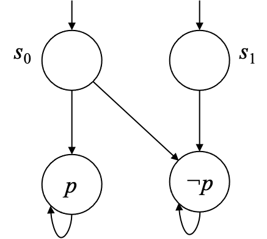

第4回 時相論理 CTL*
この回では，教科書の第4章 "Temporal Logic" の前半 (4.1 〜 4.2) について説明します．
概要
- 時相論理とは
- 計算木論理 CTL*
- CTL* の文法と意味論
- 否定標準形
4. 時相論理
時相論理は，クリプキ構造としてモデル化されたシステムの，動的な振る舞いを指定するための形式化手法である． これから考える時相論理における論理式は，ひとつの計算ステップが終わった次の時点である性質が満たされることや， ある指定された状態がいつか到達すること，あるいは，異常状態に陥ることが決してないことを表現することができる．
「次の時点で〜」，「いつか〜」そして「〜が決してない」といった性質は，特定の時相演算子 (temporal operator) で表現できる． また時相論理は，クリプキ構造のパスに時間的性質を関連付けるためのパス限定子 (path quantifier) も備えている． こうした演算子や限定子はネストすることも，ブール演算子と結合することもできる．
ここでは，非常に強力な論理である CTL*123と，その重要な部分論理である計算木論理 (CTL)415，全称 CTL* (ACTL*)67，そして，線形時間論理 (LTL)89 に注目する． これらの論理で記述された性質は，モデル検査アルゴリズムに利用できる．
4.1 計算木論理 CTL*
直感的な計算木論理 (computation tree logic) の意味論は，計算木の概念に基づいている． クリプキ構造 の初期状態 が与えられると，以下の図のようにクリプキ構造を を根として展開することで木構造を得ることができる．
左の図はクリプキ構造の状態遷移グラフで，右の図はそこから得られる（無限の）木構造，すなわち計算木である．
計算木は，初期状態から実行可能な系列の全てを表している． の遷移関係については左全関係 (left-total) であるとしているため，全ての状態が次の状態をもっている． したがって，木の全ての枝は無限に続くことになる．
パス限定子と時相演算子
時相論理 CTL* は計算木の，ひいてはその根底にあるクリプキ構造の特性を定義する． CTL* の式はパス限定子と時相演算子から構成される．
CTL* は と の二つのパス限定子をもつ．
-
「すべての計算パスにおいて である」
この式は，与えられた状態からの全てのパスが特性 を満たすことを意味する．
-
「 を満たす計算パスが存在する」
この式は，与えられた状態からの少なくとも一つのパスが特性 を満たすことを意味する．
パス限定子は特定の状態において，その状態から始まるすべての，あるいはいくつかのパスが特性 を満たすことを表すために用いられる． と を複数組み合わせることで，計算木の分岐構造を記述することができる．
CTL* は ，，，， の 5 つの時相演算子をもつ． 直感的な意味は以下の通りである． ここで， と は状態の特性を記述する式であるとする．
-
「次の（net）状態で である」
この式は，命題 がパスの二番目の状態（つまり次の状態）で満たされることを要求する．
-
「いつか である」あるいは「将来的に（in the uture） である」
この式は，特性 がパスのどこかの状態で満たされることを表すために用いられる．
-
「つねに である」あるいは「全域的に（lobally） である」
この式は，特性 がパスの全ての状態で満たされることを表すために用いられる．
-
「 となるまで（ntil） である」
演算子は，二つの特性を組み合わせるため少しだけ複雑である． この式が満たされるのは，パス上に特性 を満たす状態が存在した上で，かつそこまでの全ての状態において特性 が満たされているときである．
-
「 が を開放（elease）する」
これは 演算子の論理双対 (logical dual) である． この式は，特性 が初めて満たされる状態を含むそこまでのパス上において，特性 が満たされていることを要求する． 特性 は必ずしも満たされなくてもよく， が満たされることなく のみが初期状態からずっと満たされるパスにおいても は真と評価される．
時相演算子は，与えられた木の無限のパスに沿って満たされる特性を記述する． 以下の図は，無限のパスについて，これらの時相演算子がどのような場合に満たされるかを示している． ●が が満たされる状態，□が が満たされる状態である．
Example 4.1
Example 4.1
前述の例をもう一度使って，CTL* の意味論を非形式的に説明する． と をそれぞれ計算木の最も左と右の枝を経由するパスとする．
では特性 が全ての状態で満たされるので， は真となる． このことを形式的に と書くことにする． 一方で，明らかに である． したがって，初期状態 から一つのパスが を満たすため， であり，全てのパスが満たすわけではないため である．
同様に，初期状態から次の次の状態（）で を満たすパスが存在（）するため であり，全てのパスの次状態（）で を満たす状態に，次で到達するパスが存在（）しないので， である．
ここまでの CTL* への非形式的な導入により，パス限定子と時相演算子の重要な違いがわかる． つまり，パス限定子は状態の性質（例えば，「ある特定のパスがこの状態から始まるか？」）を記述するものであり，時相演算子はパスの性質（例えば，「このパスである特定の状態へと到達できるか？」）を記述するものである． 次の節で説明するように，この区別からパス論理式と状態論理式の概念が生まれている．
4.2 CTL* の文法と意味論
これから，CTL * の文法と意味論について形式的に定義する．
4.2.1 CTL* の文法
CTL* の文法は，命題論理を上述の時相演算子とパス限定子を用いて自然に拡張したものである． CTL* には 2 つのタイプの論理式があり，状態に対して真と評価される状態論理式と，パスに対して真と評価されるパス論理式である．
を原子命題の集合とする． 状態論理式の文法は以下のルールで与えらえる．
- A1: ならば， は状態論理式である．
- A2: および が状態論理式ならば，, , は状態論理式である．
- A3: がパス論理式ならば， および は状態論理式である．
パス論理式の文法は，以下の 2 つの追加ルールで定められる．
- A4: が状態論理式ならば， はパス論理式でもある．
- A5: および がパス論理式ならば，, , , , , , , そして はパス論理式である．
CTL* は，上述のルールに従う状態論理式の集合となる．
したがって，CTL* の論理式は，ブール命題，パス限定子で修飾された時相論理式，そしてそれらのブール結合となる．
4.2.2 CTL* の意味論
クリプキ構造の定義を思い出そう．
クリプキ構造の定義 (第2回の再掲)
- クリプキ構造は 5 つ組 である．
- は状態の集合である．
- は初期状態の集合である．
- は遷移関係であり，左全関係である．すなわち，全ての状態 に対して となる が存在する．
- は原子命題の集合である．
- は，各状態を，その状態で真となる原子命題の集合でラベル付けする関数である．
- 状態 から始まる の無限のパスは， およびすべての に対して を満たす状態の列 である． から始まる のサフィックスを と書くことにする．
モデル化を表す関係 は式の構造に基づいて帰納的に定義される． が状態論理式ならば， はクリプキ構造 において状態 で が満たされることを意味する． 同様に， がパス論理式ならば， はクリプキ構造 においてパス に沿って が満たされることを意味する．
記号 を論理的等価を表すために用いる． すなわち， および が状態論理式ならば， が満たされるのは，すべての と に対して， であるときかつそのときのみ となる場合である． 同様に， および がパス論理式ならば， が満たされるのは，すべての と に対して， であるときかつそのときのみ となる場合である． 文脈からクリプキ構造 が明らかな場合，それを省略する場合がある．
次の定義においては， および を状態論理式， および をパス論理式とする． さらに，式中のすべての原子命題は に含まれているものとする． これにより，ベースケースのみ定義すれば十分であることが保証される．
Definition 4.2
Definition 4.2（CTL* の意味論）
および を状態論理式， および をパス論理式とする． の概念は式の構造に基づいて帰納的に定義される．
- に対して
- または
- かつ
- から始まる無限パス が存在して， を満たす．
- から始まるすべての無限パス が， を満たす．
- パス の最初の状態 が， を満たす．
- または
- かつ
- となる が存在する．
- 全ての に対して である．
- となる が存在し，全ての に対して である．
- 全ての に対して，もし全ての に対して であれば である．
最後に，クリプキ構造に対する関係 を以下のように定義する．
- 全ての初期状態 に対して である．
充足可能性と恒真性
CTL* 論理式 があるクリプキ構造 に対して であるとき， は充足可能 (satisfiable) であるという． 式 が全ての に対して であるとき は恒真 (valid) であるという．
論理式の充足可能性と恒真性は古典的な問題で，論理学の分野でしばしば議論されてきた． 一方で，モデル検査問題は論理式 と与えられたクリプキ構造 に対して定義される． その目的は， が のモデルである，すなわち， かどうかを判定することである．
モデル検査の概念は任意のクリプキ構造に対して十分に定義されているが，後にモデル検査アルゴリズムについて議論する際には，有限のクリプキ構造（すなわち状態集合 が有限）にのみ着目していることには注意が必要である．
CTL* の意味論の重要な性質
CTL* の意味論は，次の興味深くかつ重要な性質をもつ．
- ，，，， の 5 つの演算子があればどのような CTL* 式も表現可能である．
-
Definition 4.2 の 16 番目の節は，式が複数の初期状態をもつ構造に対して評価される場合，やや予期しない影響を及ぼす．
初期状態 をもつ以下のクリプキ構造を考える．
 であり， である． したがって，ただ一つの初期状態しか を満たさないので，定義より である． 一方で， は では満たされるが では満たされず，したがって となる．
結果として， と のいずれもが では満たされないことになる． 初期状態が一つのみであれば，このような状況に陥ることはない．
4.2.3 否定標準形 (NNF)
否定標準形 (negation normal form, NNF) は論理式の構文形式の一つで，否定演算子（）の適用が原子命題についてのみ認められる． 後の章で，CTL* における NNF の有用性を示す．
ここでは，あらゆる CTL* 式が，NNF の式と等価であることを示す． これは，あらゆる CTL* 式に対して，以下の等価関係を繰り返し適用することで，否定を演算子の内部へ移動させられることから明らかである．
Example 4.3
Example 4.3
論理式 を考える． この式は，以下の等価関係を用いることで NNF へと変換できる．
CTL* 式から NNF への変換に要する時間は式のサイズに対して線形である． これは CTL* の多くの部分論理についても同じである． しかしながら，CTL* を NNF で表現する際には演算子として ，，，，，， を用いる必要があり，前述した ，， のみでの表現は不可能である．
Tip
CTL* を NNF で表現する際に と は不要である．これはなぜだろうか？
演習問題
問題 4.3 (Weak Until 時相演算子)
weak until 時相演算子 は以下の意味論をもつ．
すべての に対して，もし ならば，全ての に対して である．
は CTL* の表現力に影響を与えないこと，すなわち，他の CTL* 演算子により表現可能であることを示せ．
問題 4.6 (複数の初期状態をもつ構造上の意味論)
を充足可能であるが恒真ではない CTL* 式とする． でありかつ である構造が存在することを証明せよ．
-
E. M. Clarke and E. A. Emerson. Design and synthesis of synchronization skeletons using branching time temporal logic. In D. Kozen, editor, Logic of Programs:Workshop, volume 131 of Lecture Notes in Computer Science, pages 52–71. Springer, 1981. ↩↩
-
E. M. Clarke, E. A. Emerson, and A. P. Sistla. Automatic verification of finite-state concurrent systems using temporal logic specifications. ACM Trans. Program. Lang. Syst., 8(2):244–263, 1986. ↩
-
E. A. Emerson and J. Y. Halpern. “Sometimes” and “Not Never” revisited:On branching time versus linear time. J. ACM, 33(1):151–178, 1986. ↩
-
M. Ben-Ari, Z. Manna, and A. Pnueli. The temporal logic of branching time. Acta Inf., 20:207–226, 1983. ↩
-
E. A. Emerson and E. M. Clarke. Characterizing correctness properties of parallel programs using fixpoints. In Automata, Languages and Programming, 7th Colloquium, volume 85 of Lecture Notes in Computer Science, pages 169–181. Springer, 1980. ↩
-
O. Grumberg and D. E. Long. Model checking and modular verification. ACM Trans. Progr. Lang. Syst., 16:843–872, 1994. ↩
-
D. E. Long. Model Checking, Abstraction, and Compositional Reasoning. PhD thesis, Carnegie Mellon University, 1993. ↩
-
A. Pnueli. The temporal semantics of concurrent programs. In Semantics of Concurrent Computation, volume 70 of Lecture Notes in Computer Science, pages 1–20. Springer, 1979. ↩
-
A. Pnueli. A temporal logic of concurrent programs. Theor. Comput. Sci., 13:45–60, 1981. ↩